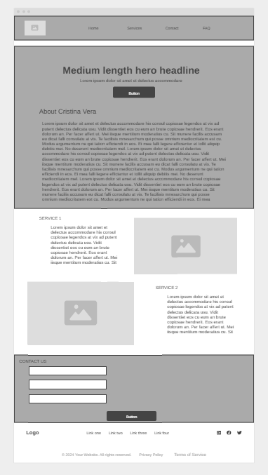
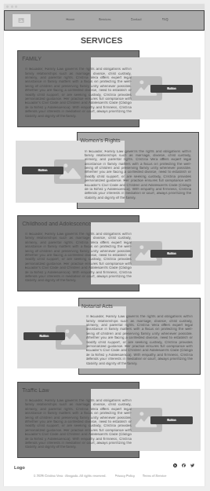
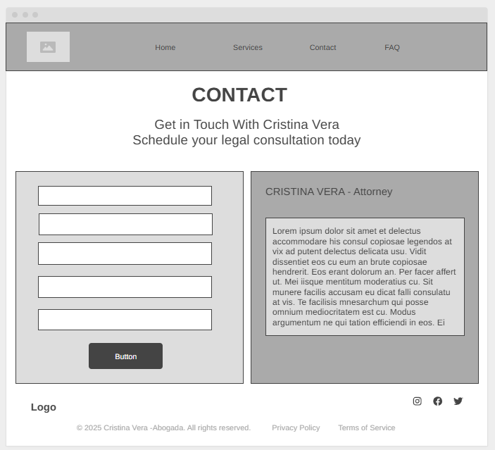

Overview
Purpose
To present the legal services of Cristina Vera, an experienced attorney based in Milagro, Ecuador. The site allows users to view services, schedule appointments, submit documents for identity verification, and access legal resources in both Spanish and English.
Audience
The site is designed for individuals, families, and small business owners in Ecuador seeking personalized and trustworthy legal services—especially in areas such as family law, domestic violence, civil matters, notarial procedures, and children's rights.
Branding
Website Logo
Style Guide
Color Palette
| Primary | Secondary | Accent 1 | Accent 2 |
|---|---|---|---|
Typography
Heading Font: Playfair Display
Paragraph Font: Open Sans
Example paragraph
Cristina Vera is a committed attorney focused on protecting the rights of her clients. Her experience and human-centered approach make her stand out in her field.
Colored paragraph example
Your legal consultation is in good hands. Book your appointment today.
Navigation
Site Map
Content
Home
About Cristina Vera:
Cristina Vera is a licensed attorney based in Milagro, Ecuador, with over 10 years of experience in civil, family, and notarial law. Her mission is to make legal guidance more accessible, especially for individuals and small business owners who need reliable advice and representation. Cristina combines her legal expertise with a compassionate approach, helping clients navigate legal processes with confidence.
Cristina has worked with hundreds of clients in cases involving family disputes, women’s rights, custody, and estate planning. She’s known for her clarity, professionalism, and results-driven focus. Clients trust her to provide honest assessments, explain their options, and fight for their best outcomes—whether inside or outside of court.
Why Visit This Site?
This website is a direct way for people to learn about Cristina Vera’s legal services, check credentials, submit case details, and request a consultation online. It allows users to get informed before speaking to an attorney, making the consultation more effective. Visitors can view Cristina’s areas of legal practice, read FAQs, verify their identity, and schedule an appointment via Calendly.
The site is especially helpful for people who need legal help but aren’t sure where to start. It provides key information in both Spanish and English, ensuring that anyone—regardless of their tech comfort level or legal knowledge—can use it easily.
Images for the Home page
`Services
Legal Services Offered
Cristina Vera specializes in several important areas of Ecuadorian law:
Family Law: Custody, divorce, child support, visitation, and protection for children and adolescents.
Women’s Rights: Support for women in domestic violence situations, legal protection orders, and representation.
Notarial Acts: Contracts, powers of attorney, property transfer documents, and legal declarations.
Civil Law: Disputes between individuals or businesses, breach of contract, and damage claims.
Traffic Law: Representation in traffic violations or accident-related disputes.
Violence Prevention: Legal assistance and rapid intervention for cases of intrafamilial violence.
Each section of this site provides examples of Cristina’s services and lets users upload necessary documents securely.


Contact
Contact and Consultations
The contact page allows visitors to get in touch quickly. Users can fill out a form to request a consultation, upload their national ID (cédula), and describe their legal matter. Once submitted, Cristina’s team will review the request and respond within 24–48 business hours.
If the user prefers, they can also book directly via Calendly. Cristina accepts both in-person and remote (video) consultations depending on availability.
The site also includes a Google reCAPTCHA to prevent spam and protect the submission process.
What Makes This Site Unique?
This site is more than a static law firm profile. It’s a fully interactive and bilingual platform that meets the modern expectations of legal clients.
By combining clear content, online scheduling, and document upload, it allows clients to begin their legal journey with clarity and ease.
Unlike other generic legal directories, this site is designed specifically for Cristina’s clients and tailored to Ecuador’s laws. Visitors get direct access to an experienced, real attorney—not just a form or database.
Images for the Contact page
Wireframes
Home
Clean layout with featured video, headline, and consultation CTA.
Services
List of services with supporting images or icons and document upload option.
Contact
Includes form fields, reCAPTCHA, and appointment scheduling button.
